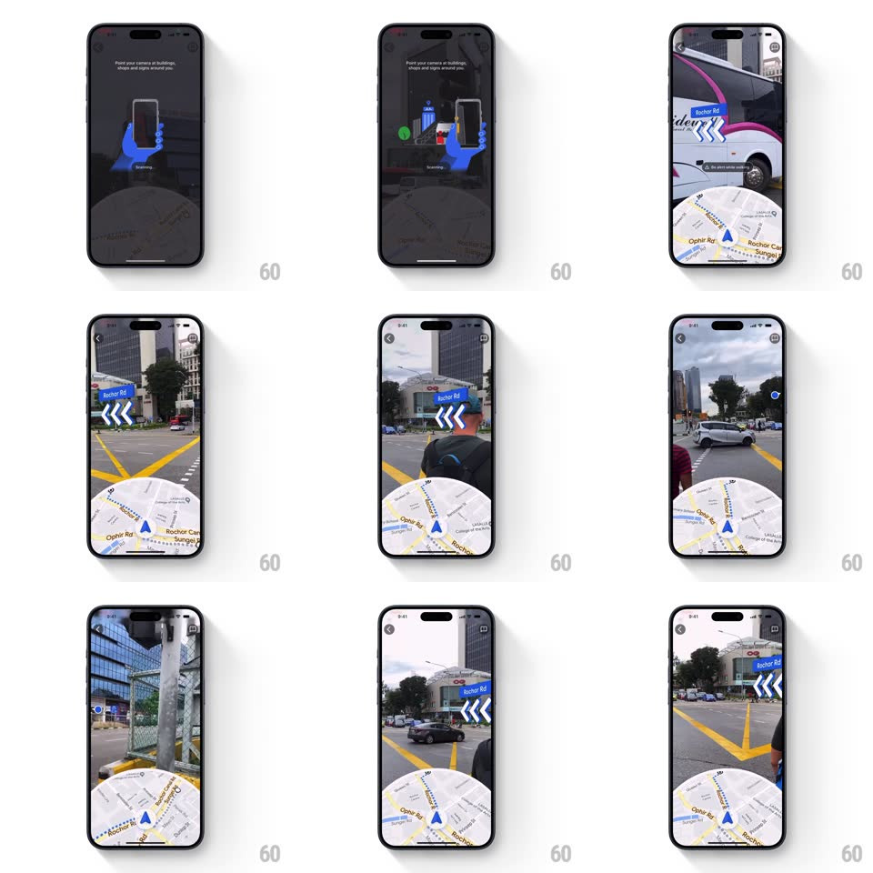

Media
Frame-by-frame

Rebuild this interaction 1:1: Google Maps Live View - after a scanning onboarding state, the camera feed fills the top of the screen with gyroscope-tracked street labels and chevron arrows pinned to the world, while a circular 2D map sits below; tilting the phone down swaps to the full map.

Rebuild this interaction 1:1: Google Maps Live View - after a scanning onboarding state, the camera feed fills the top of the screen with gyroscope-tracked street labels and chevron arrows pinned to the world, while a circular 2D map sits below; tilting the phone down swaps to the full map. ## Integration Integration: stack-agnostic spec - springs given as stiffness/damping, timed motions as duration + curve; map every value to your framework and animation library of choice. ## Scene A split navigation view: live camera feed above (street signs, buildings, traffic), a circular masked 2D map below showing the route and position cone. The onboarding state is a dark screen with a blue hand-holding-phone illustration and "Point your camera at buildings, shops and signs around you" over a Scanning indicator. ## Motion spec Pattern: AR spatial overlay with gyroscope tracking, continuous. - Onboarding: the illustration gently rotates the phone (tilt loop +-10deg, 1.2s, ease-in-out) while "Scanning" pulses; on calibration the dark overlay crossfades away (300ms) revealing the live feed. - AR overlay: street-name labels and large direction chevrons are anchored to world coordinates - they glide smoothly as the user pans the phone (gyroscope-driven, 1:1 with device rotation, lightly damped spring ~200/26 to kill jitter). - Chevron beat: the direction chevrons pulse sequentially (opacity 0.4 -> 1, 600ms, trailing offset 150ms) pointing along the turn. - Map puck: the circular map below rotates its position cone with the same heading. - Tilt down: past ~60deg device pitch, the AR view collapses and the 2D map expands to full screen (400ms, ease-in-out); tilting back up reverses it. ## Calibration - Labels track the world, not the screen - panning moves them against the buildings. - Damping removes hand shake without lagging deliberate pans. ## Reduced motion Chevron pulse is static; the tilt transition crossfades. ## Don't miss - The scanning overlay must visibly resolve into the calibrated state - that handoff is the product moment. - The mini map and the AR view share one heading source.